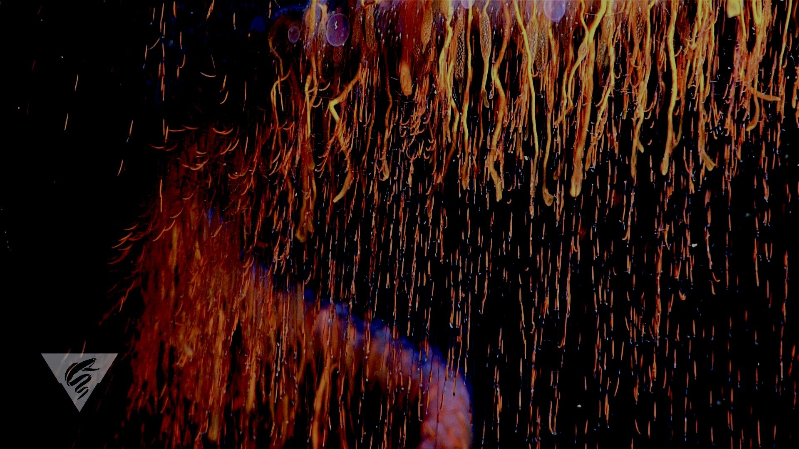
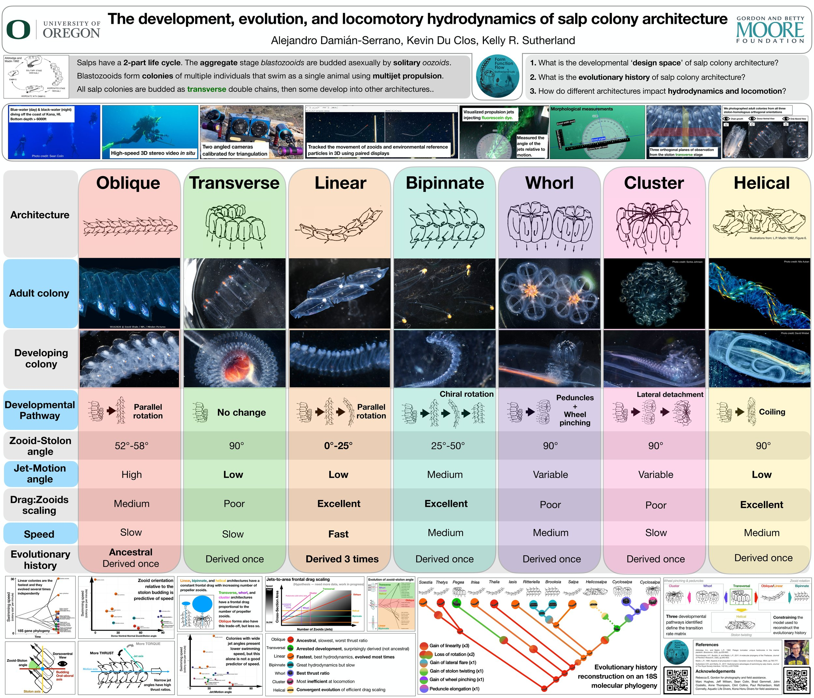

Conference Communications
Photo credit: MBARI

UO Biology Symposium, 2022, Eugene, OR
The development, evolution, and locomotory implications of salp colony architecture
Salps are urochordates that filter-feed on microbial production in the plankton in marine pelagic ecosystems. Salps form colonies of asexually-budded individuals which swim by multi-jet propulsion. Colonies develop into species-specific architectures with distinct zooid orientations. These include transversal, oblique, linear, helical, and bipinnate chains; whorls, and clusters. These architectures vary in frontal drag, thrust ratio, and locomotory efficiency. We (1) define the salp colony morphospace, (2) characterize the developmental pathways that build the different architectures, (3) assess their hydrodynamic consequences for locomotion, and (4) reconstruct their evolutionary history. First, we defined a universal comparative set of axes and planes based on the transversal double chain arrangement found in the early-developing stages of all colonies and defined adult zooid architectures as developmental transitions from this shared stage. Development shows that the morphospace is constrained to three transformation pathways, where all architectures are either final or intermediate stages towards bipinnate, cluster, or helical forms. To measure these architectures and their hydrodynamic properties, we collected and photographed specimens of adult and developing colonies, and measured the swimming speed of different species using in situ stereo-videography. To study the evolutionary history of these architectures, we inferred a new 18S gene phylogeny, reconstructed the ancestral states using models informed by developmental constraints, and identified categorical shifts in the evolutionary change of zooid orientations. We found that linear chains are the fastest and most locomotory-efficient while clusters are the slowest and most inefficient. The ancestral salp architecture is most likely oblique or linear, with every other state being derived. While transversal chains are developmentally basal, they are evolutionarily derived through the loss of zooid torsion. Our findings suggest that locomotory efficiency is not strongly selected for across salps, and might be driven by ecological trade-offs with other traits.
Yale Peabody Museum, 2021, New Haven, CT
Shaped to Kill: The Evolution of Siphonophores' Secret Weapons for Prey Capture in the Open Ocean
Predatory specialization is often associated with the evolution of modifications in the morphology of the prey-capture apparatus. Specialization has been considered an evolutionary "dead end" due to the constraints associated with these morphological changes. However, in predators like siphonophores, armed with modular structures used exclusively for prey capture, this assumption is challenged. Siphonophores are close relatives of common jellyfish and are abundant predators that capture prey using complex batteries of stinging cells. My results show that siphonophores can evolve generalism and new prey-type specializations by convergently modifying the morphology, shifting towards different optima, and adjusting the evolutionary correlations between different parts of their stinging batteries. These findings demonstrate how studying unfamiliar open-ocean predators can reveal novel patterns and mechanisms in the evolution of specialization that shape oceanic food-web structure.
Evolution 2019, Providence RI
The evolution of siphonophore tentacles as tools for prey capture
Siphonophores have the most complex and regularly organized nematocyst batteries of all Cnidaria. These structures are held on the tentacle side branches called tentilla. Tentilla serve as the principal organs for prey capture, making siphonophores an ideal system for the study of trophic specialization from an evolutionary approach. Here we describe the morphology of siphonophore tentilla and nematocysts, identify patterns in the evolutionary history of siphonophore cnidoband and nematocyst morphologies, and elucidate the relationships between these and predatory specialization. Unlike more familiar predators like vertebrates, the siphonophore prey capture apparatus is functionally, spatially, and developmentally isolated from the rest of the body. We hypothesize this allows siphonophores to evolve extreme morphological adaptations to shift between dietary specializations. Understanding the evolutionary history of the prey capture apparatus is critical to contextualize the role of morphological diversity in the determination of food web structure.
eDSBS 2020
Characterizing the Diets of Siphonophores using DNA Metabarcoding
Siphonophores are abundant and diverse predators in the Offshore Central California Current (OCCC) ecosystem. Due to limited access to the deep midwater environment, little is known about the diets of most deep-dwelling species. In this study, we perform DNA metabarcoding of the gut contents of 27 siphonophore species across the water column and characterize their diets. We collected siphonophore specimens using blue water dives and ROV dives. We extracted DNA from the feeding bodies, then amplified and sequenced six barcode markers along the 18S gene. OTUs are being assigned to prey taxa using a local zooplankton database of 18S amplicons. Our results may reveal hidden links between mesozooplankton and higher trophic levels in the midwater food-web. This study will improve our understanding of the role of siphonophores in the open ocean, and the importance of their local species diversity in the OCCC for nutrient flow and ecosystem functioning.